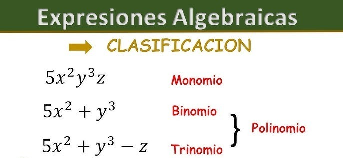

Factorización de Expresiones Algebraicas.
La factorización de expresiones algebraicas es el proceso de descomponer una expresión en el producto de otros factores más sencillos. Este método es fundamental en matemáticas porque permite simplificar expresiones, resolver ecuaciones y analizar funciones.
Existen diferentes técnicas de factorización, entre ellas se encuentran:
El descubrimiento de raíces o solución de ecuaciones.
Análisis de funciones y sus propiedades
Ayudar a resolver con mayor facilidad problemas algebraicos y geométricos.

Importancia en matemáticas:
La factorización permite identificar raíces o ceros de funciones polinomiales, facilita la resolución de ecuaciones y ayuda a comprender mejor la estructura interna de los polinomios. También es esencial en el estudio de divisibilidad y en la simplificación de fracciones algebraicas.
Ejemplo práctico:
Vamos a factorizar la siguiente expresión:
6x²+9x
Paso 1: Identificar el factor común
Observamos cada término:
6x²
9x
Buscamos qué tienen en común:
En los números: 6 y 9 tienen como divisor común el 3.
En las letras: ambos tienen la variable x.
Por tanto, el factor común es 3x.
Paso 2: Extraer el factor común
Dividimos cada término entre el factor común
3𝑥:
6x²÷3x=2x
9x÷3x=3
Luego escribimos el resultado como producto:
6x²+9x=3x(2x+3)
Resultado final:
6x²+9x=3x(2x+3)
Interpretación:
Esto significa que la expresión 6x²+9x puede escribirse como el producto del factor común 3x y del paréntesis (2x+3)
Al multiplicar de nuevo 3x(2x+3) Obtenemos la expresión original, comprobando que la factorización es correcta.
Ir arriba